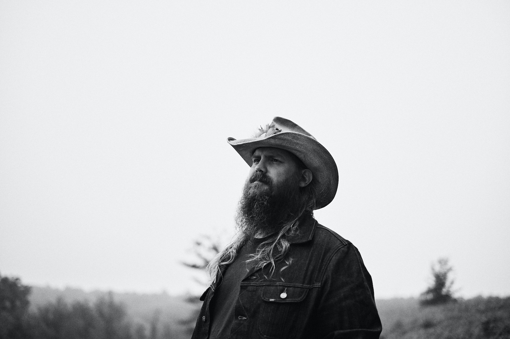
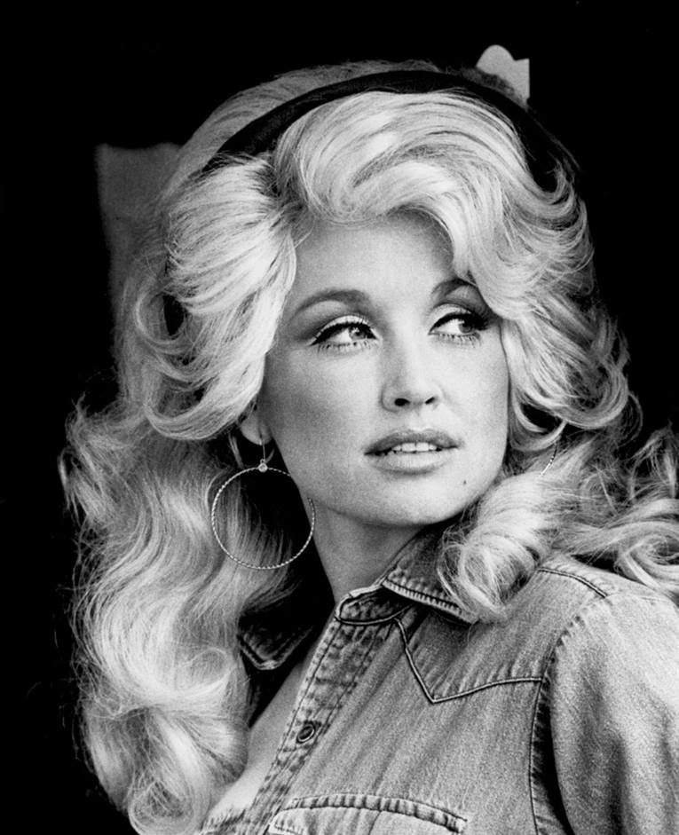
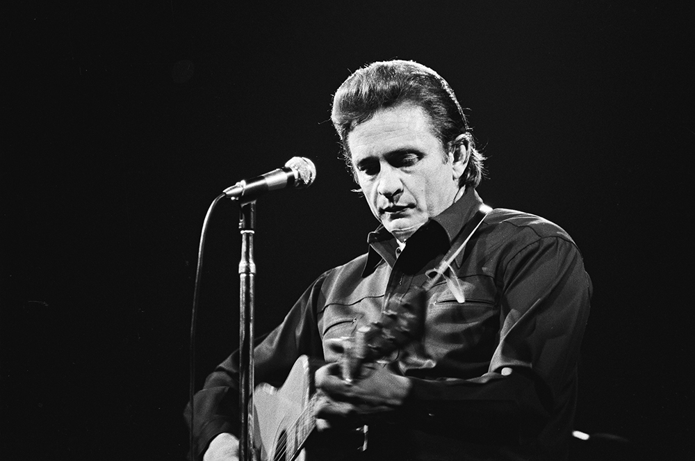
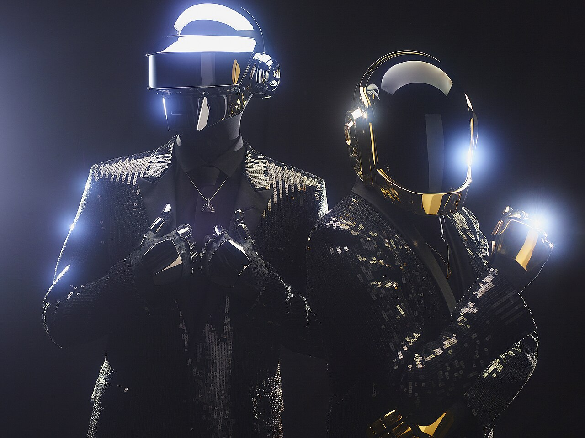

Country music originated in the rural southern United States during the early 20th century, drawing inspiration from Appalachian folk music, traditional ballads, gospel, blues, and Irish and Scottish musical traditions. In the 1920s, the first commercial country recordings helped popularize the genre, while radio programs such as the Grand Ole Opry established Nashville, Tennessee, as the heart of country music. Over the decades, country evolved into styles such as honky-tonk, bluegrass, outlaw country, and contemporary country, with artists like Johnny Cash, Dolly Parton, Garth Brooks, and Luke Combs helping bring the genre to audiences worldwide.
What makes country music unique is its emphasis on storytelling and emotional honesty. Many songs explore everyday experiences such as love, family, heartbreak, hard work, faith, and life in rural communities. Traditional country music is known for its use of acoustic guitar, fiddle, banjo, steel guitar, and harmonica, although modern country often blends these instruments with elements of rock and pop.
Country music has a strong sense of community and culture. Festivals, concerts, and traditions like line dancing create shared experiences that bring fans together. Combined with artists who often write about real-life experiences, this authenticity has helped country music remain one of the most enduring and popular genres in the world.



Electronic Dance Music (EDM) is a broad genre of music created primarily using electronic instruments, synthesizers, drum machines, and computers. Its roots can be traced back to the late 1970s and early 1980s, evolving from disco into genres such as house in Chicago and techno in Detroit. During the 1990s, EDM spread across Europe through rave culture, and by the 2010s it had become a global phenomenon thanks to artists like Avicii, Calvin Harris, Martin Garrix, and Skrillex, as well as major festivals such as Tomorrowland and Ultra Music Festival.
EDM focuses on rhythm and electronic production rather than traditional instruments. Most songs feature a steady dance beat, powerful basslines, synthesized melodies, and the signature "build-up and drop" structure that creates excitement on the dance floor. EDM is also designed for live DJ performances, where tracks are mixed seamlessly to create a continuous musical experience.
EDM's popularity comes from its accessibility and versatility. The music often relies on memorable melodies and powerful rhythms rather than complex lyrics, making it enjoyable across different languages and cultures. Advances in music production software have also made it easier for aspiring producers to create professional-quality tracks, allowing the genre to grow rapidly worldwide.
